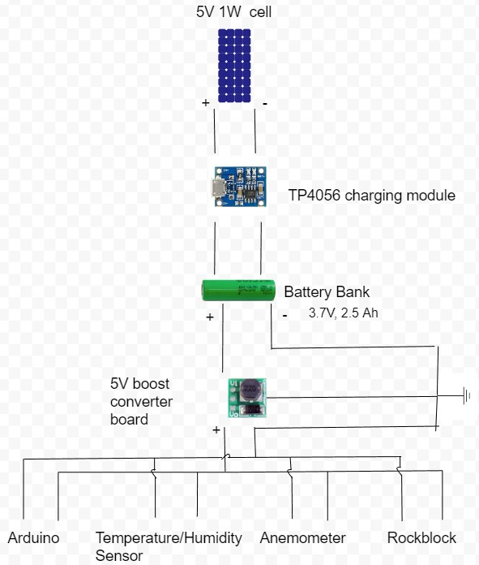

Remote Solar-Powered Weather Station
Charging Circuit Schematic
My Responsibilities
This project was a lot of fun and it was my first time working with solar cells. I was responsible for the power to the arduino and all the sensors, which was supplied by a battery charged by a solar cell. In designing the system, we computed the average energy usage needed to record, compute, and transmit readings and allowed enough capacity to keep the system running even if there is no solar power for several days. From there, all the parts were assembled and tested, then integrated into the final unit (seen on the right).
Finished Weather Station